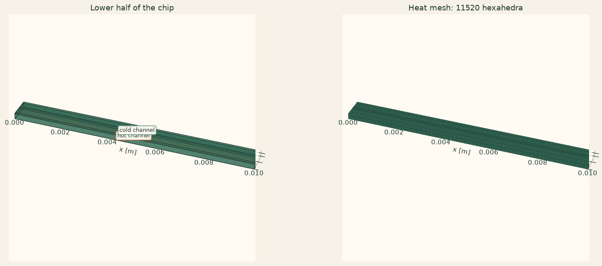

Docs › Examples › Counterflow MEMS heat exchanger
Conjugate heat transfer · 3D
Counterflow MEMS heat exchanger
Hot and cold water in two parallel microchannels of a stainless-steel chip, flowing in opposite directions and exchanging heat through the steel.

What it computes
OneSimulation solves the laminar flow in each channel with Taylor-Hood elements and the heat transport through water and steel with quadratic elements on a graded hexahedral mesh of the half chip read from STEP, driven one way by both flows. The bulk temperatures along both channels give the exchanged heat and the effectiveness. The script that builds the STEP files comes with the notebook.
What it checks
The hot stream gives off 926.85 mW and the cold one takes up 926.96 mW, an energy balance closed to 1.2e-4; the effectiveness of 0.622 compares with 0.610 from the effectiveness-NTU relation with a fully developed Nusselt number on the wetted perimeter.
Geometry
The notebook starts at the import of the CAD files mems_counterflow_heat_exchanger.step, mems_counterflow_heat_exchanger_cold.step, mems_counterflow_heat_exchanger_envelope.step, mems_counterflow_heat_exchanger_hot.step: STEP (AP242), readable by any CAD program, with the names of the faces that the boundary conditions use. Put them next to the notebook.

The geometry script
The script mems_counterflow_heat_exchanger_geometry.py builds the geometry with the CAD objects of OneSimulation and writes the files. Change a dimension there, run it, and run the notebook again.
"""Geometry of the OneSimulation example "Counterflow MEMS heat exchanger".
Builds the lower half of a stainless-steel micro heat exchanger with the CAD objects of
OneSimulation: a block 10 mm long (x), 0.9 mm wide (y) and 0.25 mm high (half of 0.5 mm, z from the
mid-plane down) with two parallel channels, each 0.3 mm wide and 0.1 mm high in the half, separated
by a 0.1 mm wall. The block is written to mems_counterflow_heat_exchanger.step; its faces are named
after the three bodies (hot.x_min, hot.x_max, cold.x_min, cold.x_max, hot.z_max, cold.z_max on the
mid-plane, steel.* for the steel). The two channels, which mark the fluid regions and carry the flow
meshes, are written to mems_counterflow_heat_exchanger_hot.step and ..._cold.step, the box enclosing
the chip, on which the heat mesh is laid, to mems_counterflow_heat_exchanger_envelope.step.
"""
from onesim.cad.d3 import Box
mm = 1e-3
length, width, height, channel, depth, wall = (
10 * mm,
0.9 * mm,
0.25 * mm,
0.3 * mm,
0.1 * mm,
0.1 * mm,
)
hot = Box(
length=length, width=channel, height=depth, origin=(0.0, 0.1 * mm, height - depth)
)
cold = Box(
length=length,
width=channel,
height=depth,
origin=(0.0, 0.1 * mm + channel + wall, height - depth),
)
steel = Box(length=length, width=width, height=height) - hot - cold
(hot.named("hot") | cold.named("cold") | steel.named("steel")).save(
"mems_counterflow_heat_exchanger.step"
)
hot.save("mems_counterflow_heat_exchanger_hot.step")
Box(length=length, width=width, height=height).save(
"mems_counterflow_heat_exchanger_envelope.step"
)
cold.save("mems_counterflow_heat_exchanger_cold.step")The notebook
The complete notebook, cell by cell. Run it to produce the figures and the comparison printout.
Micro heat exchangers in lab-on-a-chip devices and micro reactors bring two liquids to the same temperature on a few millimetres. Here two channels, 0.3 mm wide and 0.2 mm high, run side by side through a stainless-steel chip, 10 mm long, separated by a 0.1 mm wall. Hot water enters one channel at 80 °C, cold water the other one from the opposite end at 20 °C, both with a mean velocity of 0.1 m/s (\(Re\approx24\)).
The flows obey the steady Navier-Stokes equations; the heat is conducted through the steel and carried by the water (conjugate heat transfer, constant properties, one-way coupling):
The chip is symmetric about its mid-plane; the lower half comes from the CAD file mems_counterflow_heat_exchanger.step (faces named after the bodies hot, cold, steel), the channels from ..._hot.step and ..._cold.step. The script mems_counterflow_heat_exchanger_geometry.py builds them with the CAD objects of OneSimulation.
| face | flow | heat | |---|---|---| | hot.x_min / cold.x_max | inlet, fully developed, 0.1 m/s | \(T=353.15\) K / \(293.15\) K | | hot.x_max / cold.x_min | outlet, traction free | no conduction | | hot.z_max, cold.z_max, steel.z_max (mid-plane) | free slip | no flux | | outer steel faces | — | insulated |
Reference. Without losses the heat given off by the hot stream equals the heat taken up by the cold one. For two equal heat capacity rates \(C\) the effectiveness of a counterflow exchanger is \(\varepsilon=NTU/(1+NTU)\) with \(NTU=UA/C\) (Incropera et al., Fundamentals of Heat and Mass Transfer, Sec. 11.4); \(UA\) is estimated from the fully developed Nusselt number of the channels, \(Nu\approx3.0\), on the whole wetted perimeter of each channel: the well-conducting steel around the channels carries the heat from every wall, so its own resistance is neglected.
from dataclasses import replace
import numpy as np
from onesim.cad.d2 import Plane
from onesim.cad.exchange import load
from onesim.materials import IsotropicSolid, NewtonianFluid
from onesim.meshing import (
Geometric,
Piecewise,
StructuredHexahedralMesher,
TwoSided,
Uniform,
region_mesh,
)
from onesim.numerics import Numerics
from onesim.numerics.fem import FiniteElement, GalerkinAdvection, Lagrange, TaylorHood
from onesim.numerics.linear import SparseDirect
from onesim.numerics.nonlinear import Newton
from onesim.physics.heat_transfer import (
ConvectiveHeatTransfer,
FixedTemperature,
HeatFlux,
)
from onesim.physics.hydrodynamics import (
FixedVelocity,
FlowTraction,
FreeSlipLaw,
IncompressibleNavierStokes,
NoSlipWall,
WallShear,
fully_developed_inflow,
)
from onesim.results.derived import derived_field
from onesim.results.integration import integrate_plane
from onesim.results.sampling import field_function
from onesim.simulation import Problem, Simulation, regionwise
from onesim.simulation.initial_conditions import InitialValue
from onesim.visualization import plots, theme
theme.set()Geometry and mesh
Each channel has its own hexahedral flow mesh. The heat mesh is laid on the box enclosing the chip (mems_counterflow_heat_exchanger_envelope.step) and graded so that cell faces lie on all channel walls; region_mesh names its faces after the chip.
chip = load("mems_counterflow_heat_exchanger.step")
channels = {
"hot": load("mems_counterflow_heat_exchanger_hot.step"),
"cold": load("mems_counterflow_heat_exchanger_cold.step"),
}
faces = chip.boundaries
envelope = load("mems_counterflow_heat_exchanger_envelope.step")
length, width, height = chip.size
mm = 1e-3
flow_meshes = {
name: StructuredHexahedralMesher(
cells=(60, 8, 4),
grading=(
Uniform(60),
TwoSided(8, ratio=2.0),
Geometric(4, ratio=2.0, toward="start"),
),
).generate(channel)
for name, channel in channels.items()
}
heat_mesh = region_mesh(
StructuredHexahedralMesher(
cells=(60, 24, 8),
grading=(
Uniform(60),
Piecewise(
(
(0.1 * mm, Uniform(2)),
(0.3 * mm, TwoSided(8, ratio=2.0)),
(0.1 * mm, Uniform(4)),
(0.3 * mm, TwoSided(8, ratio=2.0)),
(0.1 * mm, Uniform(2)),
)
),
Piecewise(
(
(0.15 * mm, Uniform(4)),
(0.1 * mm, Geometric(4, ratio=2.0, toward="start")),
)
),
),
).generate(envelope),
chip,
geometry=chip,
)
view = plots.Camera(elevation=35, azimuth=-70)
fig = plots.figure(1, 2, size=(14, 5.5))
plots.geometry(
[
chip.named("steel"),
channels["hot"].named("hot channel"),
channels["cold"].named("cold channel"),
],
camera=view,
title="Lower half of the chip",
ax=fig[0],
)
plots.mesh(
heat_mesh,
groups=("all",),
legend=False,
camera=view,
title=f"Heat mesh: {heat_mesh.cell_count} hexahedra",
ax=fig[1],
)
plots.show()Flow
The two channels are solved one after the other; the cold water enters at the far end.
water = NewtonianFluid(density=990.0, dynamic_viscosity=0.6e-3)
mean_speed = 0.1
velocities = {}
for name, channel in channels.items():
walls = channel.boundaries
inlet, outlet = (
(walls.x_min, walls.x_max) if name == "hot" else (walls.x_max, walls.x_min)
)
flow = IncompressibleNavierStokes(domain=channel.volume, material=water)
velocities[name] = (
Simulation(
problem=Problem(
name=f"{name} channel",
geometry=channel,
physics=(flow,),
boundary_conditions=(
FixedVelocity(
boundary=inlet,
physics=flow,
value=fully_developed_inflow(
flow_meshes[name],
inlet,
mean_velocity=mean_speed,
no_slip=walls.y_min | walls.y_max | walls.z_min,
),
),
FlowTraction(
boundary=outlet,
physics=flow,
value=lambda x, y, z: np.zeros((len(x), 3)),
),
NoSlipWall(
boundary=walls.y_min | walls.y_max | walls.z_min, physics=flow
),
WallShear(boundary=walls.z_max, physics=flow, law=FreeSlipLaw()),
),
initial_conditions=(InitialValue(flow.velocity, (0.0, 0.0, 0.0)),),
),
mesh=flow_meshes[name],
numerics=Numerics(
spatial=FiniteElement(element=TaylorHood()),
initial_guess={flow.velocity: (0.0, 0.0, 0.0)},
nonlinear_solver=Newton(
linear_solver=SparseDirect(),
absolute_tolerance=1e-14,
relative_tolerance=1e-10,
),
),
)
.solve_stationary()
.field(flow.velocity)
)Conjugate heat transfer
The velocity in the chip is the sum of both channel flows, each zero outside its channel (the nearest point of its flow mesh lies on a no-slip wall).
properties = {"water": (990.0, 4180.0, 0.62), "steel": (7900.0, 500.0, 16.0)}
by_region = lambda index, unit: regionwise(
(
(channels["hot"], properties["water"][index]),
(channels["cold"], properties["water"][index]),
),
default=properties["steel"][index],
unit=unit,
)
material = replace(
IsotropicSolid(
density=1.0,
specific_heat_capacity=1.0,
thermal_conductivity=1.0,
youngs_modulus=1.0,
poisson_ratio=0.3,
thermal_expansion_coefficient=0.0,
),
density=by_region(0, "kg/m^3"),
specific_heat_capacity=by_region(1, "J/(kg*K)"),
thermal_conductivity=by_region(2, "W/(m*K)"),
)
hot_in, cold_in = 353.15, 293.15
moving = {name: field_function(field) for name, field in velocities.items()}
heat = ConvectiveHeatTransfer(
domain=chip.volume,
material=material,
velocity=lambda x, y, z: moving["hot"](x, y, z) + moving["cold"](x, y, z),
)
temperature = (
Simulation(
problem=Problem(
name="Heat exchanger",
geometry=chip,
physics=(heat,),
boundary_conditions=(
FixedTemperature(
boundary=faces["hot.x_min"], physics=heat, value=hot_in
),
FixedTemperature(
boundary=faces["cold.x_max"], physics=heat, value=cold_in
),
HeatFlux(
boundary=faces.all - faces["hot.x_min"] - faces["cold.x_max"],
physics=heat,
value=0.0,
),
),
),
mesh=heat_mesh,
numerics=Numerics(
spatial=FiniteElement(
element=Lagrange(order=2), convection=GalerkinAdvection()
),
linear_solver=SparseDirect(),
),
)
.solve_stationary()
.field(heat.temperature)
)Results
Bulk temperatures at the outlets from the enthalpy flux, the heat exchanged by each stream and the effectiveness.
bulk = (
lambda name, x: integrate_plane(
derived_field(
velocities[name],
lambda u, p: u[:, 0] * np.ravel(temperature.evaluate(p)),
name="enthalpy_flux",
unit="K*m/s",
),
Plane(origin=(x, 0, 0), normal=(1, 0, 0)),
).value
/ integrate_plane(
velocities[name],
Plane(origin=(x, 0, 0), normal=(1, 0, 0)),
normal_component=True,
).value
)
hot_out, cold_out = bulk("hot", length - 1e-7), bulk("cold", 1e-7)
capacity = (
2
* properties["water"][0]
* properties["water"][1]
* abs(
integrate_plane(
velocities["hot"],
Plane(origin=(length / 2, 0, 0), normal=(1, 0, 0)),
normal_component=True,
).value
)
)
given, taken = capacity * (hot_in - hot_out), capacity * (cold_out - cold_in)
effectiveness = given / (capacity * (hot_in - cold_in))
diameter = 4 * (0.3 * mm * 0.2 * mm) / (2 * (0.3 * mm + 0.2 * mm))
h = 3.0 * properties["water"][2] / diameter
ua = 1 / (2 / (h * 2 * (0.3 * mm + 0.2 * mm) * length))
ntu = ua / capacity
print(
f"hot stream: in {hot_in - 273.15:.2f} °C, out {hot_out - 273.15:.3f} °C, heat given off {1e3 * given:.3f} mW"
)
print(
f"cold stream: in {cold_in - 273.15:.2f} °C, out {cold_out - 273.15:.3f} °C, heat taken up {1e3 * taken:.3f} mW"
)
print(f"energy balance: (given - taken) / given = {(given - taken) / given:+.2e}")
print(
f"effectiveness {effectiveness:.4f}; effectiveness-NTU estimate with NTU = {ntu:.3f}: {ntu / (1 + ntu):.4f}"
)Figure
The temperature over the mid-plane of the chip, where hot (left inlet) and cold (right inlet) water pass each other, and the bulk temperatures along both channels.
x = np.linspace(1e-6, length - 1e-6, 21)
profiles = {name: [bulk(name, xi) for xi in x] for name in channels}
fig = plots.figure(layout=[["map"], ["along"]], size=(14, 10))
plots.surface(
temperature,
boundary=faces["steel.z_max"] | faces["hot.z_max"] | faces["cold.z_max"],
component=lambda T, p: np.ravel(T) - 273.15,
limits=(20, 80),
contours=13,
subdivisions=2,
label="T [°C]",
aspect=4.0,
xlabel="x [m]",
ylabel="y [m]",
title="Temperature on the mid-plane of the chip",
ax=fig["map"],
)
plots.line(
1e3 * x,
{
f"{name} water, bulk": np.array(values) - 273.15
for name, values in profiles.items()
},
xlabel="x along the chip [mm]",
ylabel="bulk temperature [°C]",
title="Counterflow temperature profiles",
ax=fig["along"],
)
plots.show()Going further
Lengthen the chip in mems_counterflow_heat_exchanger_geometry.py and watch the effectiveness approach one; replace stainless steel by silicon and see the axial conduction in the chip spoil the counterflow; or run both streams in the same direction for comparison.